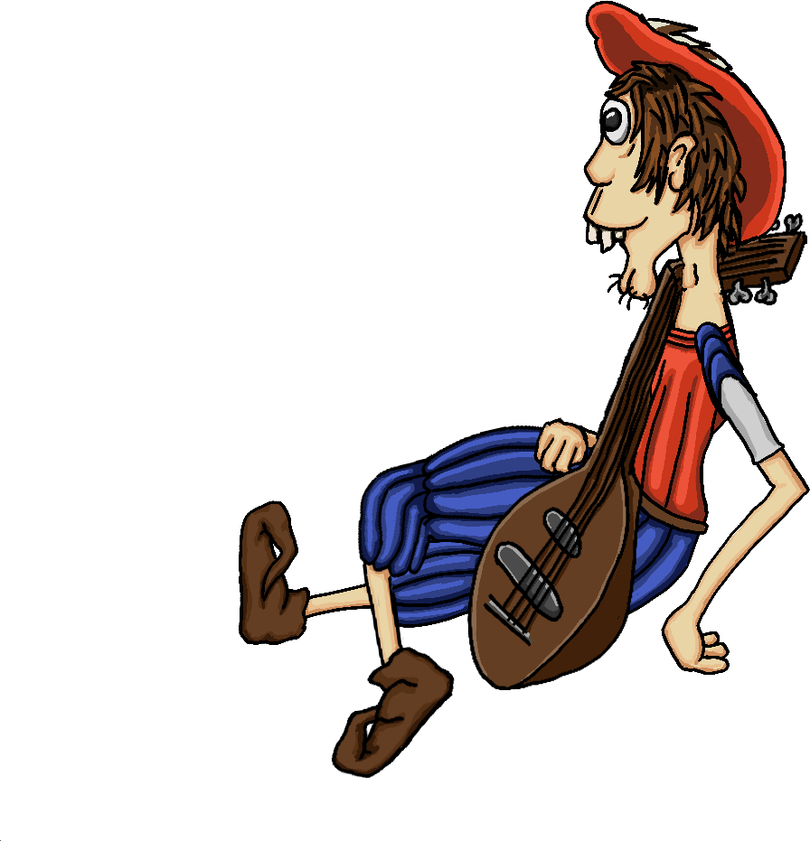
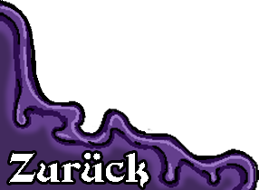
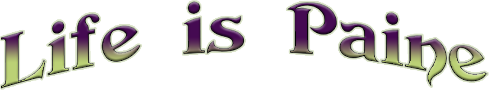
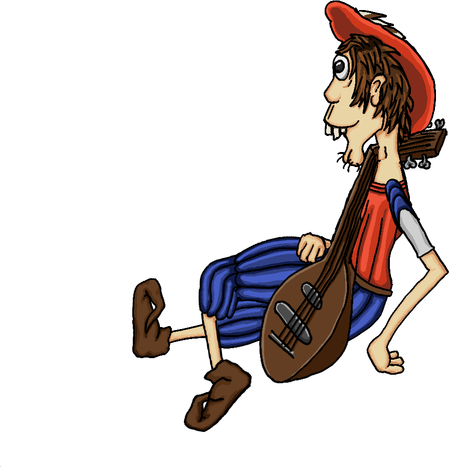
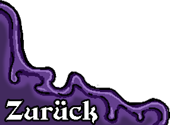
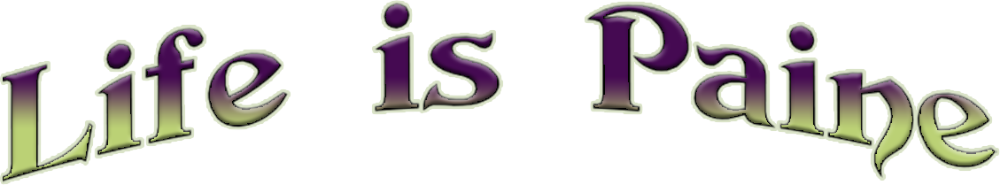

Life is Paine ist ein komödiantisches Point and Click Adventure inspiriert von klassischen Point and
Click Adventures, wie „Edna bricht aus“ und „Monkey Island“.
In Life is Paine ist alles miteinander kombinierbar. Die meisten Objekte haben pro Kombination eigene Dialoge und Witze, welche das Spiel auflockern und nervige Wiederholungen von Sätzen beim Herumprobieren verhindern.
Worüber handelt das Spiel?
Das Spiel handelt über einen Barden, welcher seine Singstimme verloren hat und nun versucht, sie wiederzuerlangen. Dazu muss er einige Rätsel in seiner Umgebung lösen und trifft etliche Menschen, welche ihm mehr oder weniger bei seiner Mission unterstützen.Was hebt das Spiel von anderen modernen Point and Click Adventures ab?
Life is Paine inkorporiert Gedichte und Wortspiele, welche die Geschichtsstruktur unterstützen und humoristische und dramatische Einblicke in den Kopf des Protagonisten gewähren.In Life is Paine ist alles miteinander kombinierbar. Die meisten Objekte haben pro Kombination eigene Dialoge und Witze, welche das Spiel auflockern und nervige Wiederholungen von Sätzen beim Herumprobieren verhindern.
Wer designt das Spiel?
Das Spiel wird von Jonas Autenrieth entwickelt und konzipiert.| Wenn du das erste Kapitel Spiels herunterladen willst kannst du es entweder hier direkt |
| Oder über itch.io herunterladen |

|
Hast du einen Bug gefunden und möchtest helfen ihn zu beheben, oder hast andere Fragen dann
sende eine Mail
Oder kontaktiere mich über Facebook
Oder kontaktiere mich über Facebook
Gefällt dir das Spiel und du möchtest mich unterstützen?
Dann schau auf meiner Patreon Seite vorbei
Oder hilf das Spiel über Kickstarter zu finanzieren.
Dann schau auf meiner Patreon Seite vorbei
Oder hilf das Spiel über Kickstarter zu finanzieren.